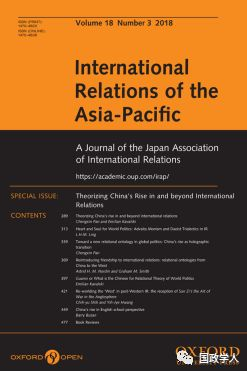
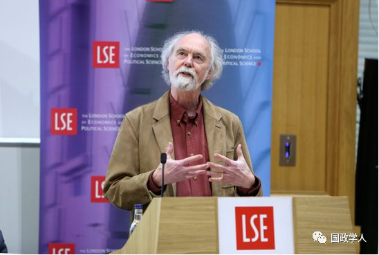

收录于合集

简 介
【作者】 巴里·布赞（Barry Buzan），伦敦政治经济学院国际关系系荣誉教授。他称自己的兴趣是：1.国际安全的概念和区域视角；2.国际历史，以及史前以来国际体系的演变；3.国际关系理论，特别是结构现实主义；4.国际社会和国际关系学中的英国学派方法。布赞曾是英国国际关系学会的主席（1988-90年），北美国际关系学会副主席（1993-94年），国际关系学协调理事会创立干事；从1999年成为国际关系学英国学派总召集人，从2004年起，他担任“欧洲国际关系学杂志”（European Journal of International Relations）的编辑。在1998年，被选为英国学术院研究员，2001年还被选为英国社会科学院（Academy of the Social Sciences）院士。
【 编译】丁伟航
【校对】 刘孝玉
【来源】 International Relations of the Asia-Pacific , Volume 18, Issue 3, September 2018, Pages 449–476.
【期刊】 《亚太国际关系》（International Relations of the Asia- Pacific）创刊于2001年，每年三期，分别于1月、5月和9月发行。该刊物主要关注：亚太地区国家间关系、亚太地区和其他地区间关系、亚太地区国家的国际关系理论等议题。

英国学派视角下的中国崛起
China’s rise in English school perspective

巴里·布赞（Barry Buzan）
内容提要
本文以英国学派（ES）理论作为理解中国及其崛起的方法。它既关注英国学派理论在哪些方面很好地适用于中国，以提供一种有趣的视角；也关注在哪些方面“中国特色”将中国置于标准的英国学派理论框架之外，进而对其提出了理论挑战。 第一部分简要地回顾了关于中国的英国学派文献。第二部分通过观察中国如何理解首要制度，将中国置于当代全球国际社会的规范结构内。第三部分探究 “中国特色”为英国学派如何思考国际社会所提出的两种挑战：等级制度和“面子”（ ‘ face ’ ）。结论评价了使用英国学派理论理解中国崛起的优势和劣势 。
文章导读
**1
**
导言 ****
英国学派为研究中国崛起提供了新的视角和思路，特别是针对“中国是否以及如何成为 维持现状或修正主义大国 ？”这一问题有独到的见解。英国学派的主要议题是区别 国际社会（社会结构） 与国际体系（物质结构），并重点关注前者。它的主要分析工具是 首要制度 的概念， 它更多是演化而来，而非人为设计的，是深刻且相对持久的社会实践。这些 实践不仅是国际社会成员所共通的，也被所有成员看作是合法行为。 首要制度包括主权、外交、国际法、领土、民族主义等；而 次要制度 则是自由制度主义学者所研究的为特定功能目的而有意设计的服务安排。首要制度构成了国际社会的规范框架，可以被用于规范性或结构性研究。因此，国家被纳入到由自己造就的国际社会中，而社会中的秩序程度从较弱的 “多元主义共存逻辑” （18世纪的欧洲）演化为较强的 “基于共享价值和制度化合作的社会连带主义逻辑” （欧盟）。本文以首要制度为主要视角来检验中国的崛起。
英国学派在某种意义上是一种历史方法，关注比较和演化的国际社会。 但鉴于其独特的一些概念，它也是一种理论方法。英国学派的理论地位主要在于它阐述了国际体系／国际社会的独特图景，并提出国际关系应将其作为主要研究对象的新分类。因为分类学确定了理论化的内容，它无疑是任何理论的基础。英国学派提出了概念（国际社会，首要制度）和争论（多元主义／社会连带主义）， 在大多数情况下，它并不提供假设方法，而是将其独特的分类法应用于主要的历史分析 。
从英国学派的角度来看，可以从 静态和动态两种方式 来解析中国， 前者是指在任何特定时间内将中国置于国际社会的规范结构中；后者是指中国与国际社会的相互作用以及它们如何随着时间推移来相互塑造。 其中，不仅要将中国置于全球国际社会（GIS），而且还应置于区域层次的国际社会。接下来，为探讨如下两个研究问题，作者分三部分进行了论述，并得出结论。
（一） 英国学派的哪些理论观点可以很好的适用于解释中国崛起，以提供一种有趣视角？
（二） “中国特色”在哪些方面将中国置于标准英国学派框架之外，进而对其提出理论挑战？
第一部分：简要回顾了英国学派关于中国历史主要时期的研究；
第二部分：通过探讨中国与首要制度的关系来定义社会，将中国置于当代全球国际社会的规范结构中，这告诉我们关于 中国是维持现状还是修正主义大国 。
第三部分：探讨了“中国特色”给政策制定者以及英国学派如何思考国际社会带来的两大挑战： 等级制度和 “面子”
**2
**
英国学派下的视角下的中国 ****
研究中国的英国学派文献，主要关注了四个不同时期： 1. 春秋战国（公元前770年-221年）；2. 传统“朝贡体系”（公元前221年-公元1895年）；3. 与扩张中的西方全球国际社会“邂逅”（1840年-1945年）；4. 中华人民共和国与全球国际社会开始互动（1949至今）， 这一时期又被分为两个阶段，毛泽东时期和70年代以后。作者认为， 第一个时期，中国本身即是独特的国际社会；第二个时期，中国是独特的区域国际社会的核心；第三个时期，中国与西方殖民国际社会 “邂逅”，经历不断抗争、失败、适应，最终在西方定义的现代的“文明标准”中获得地位。第四个时期，中国正成为西方- 全球国际社会中越来越强大的局外人，尽管它曾是重在参与的革命挑战者；到保守的维持现状大国，支持多边主义制度，但反对社会连带主义制度；而如今正朝着更加自信的改革派修正主义（ reformist revisionism ）发展 。自1840年以来，中国一直希望提高其在全球国际社会中的地位，但对于它是否支持其中的制度，是支持单个的还是全部的制度，一直以来都是非常不确定的。
**3
**
“去中心化”全球国际社会规范结构下的中国
中国与当代国际社会的关系大体上可以通过考察中国如何理解首要制度的结构来掌握，即中国接受哪些制度，不能接受哪些制度，这样便非常清楚了 。在中国与西方- 殖民国际社会“邂逅”之初，它的首要制度观对其他国家影响并不重要，因为那时候的中国总体上实力还是较弱的。然而，20世纪90年代以来，中国对全球国际社会规范结构的看法，变得越来越重要。中国开始部分地融入全球国际社会，而且它的物质实力或者说硬实力已经位居前列，美国的实力则开始相对衰落。这一部分的论证假设是我们正在进入 深度多元化的后西方世界 。它不再是中美两极超级大国的竞争，而是一些全球性大国和许多区域性大国组成的，不再有超级大国。中国不能成为超级大国有 两点原因： 1.深度多元主义的条件不允许任何国家获得成为超级大国所需的相对物质实力； 2. 两个世纪以来西方社会所享有的意识形态主导地位正在削弱，也没有任何迹象表明有其他可替代的普遍性意识形态，以为一个超级大国提供合法性。接下来，作者简要评价了中国视角下的四组首要制度：
（一）废弃的制度
1945年以前，中国强烈支持在国际社会中发挥重要作用的 三种制度：王朝主义、帝国主义／殖民主义和人类不平等， 如今这些制度已经丧失合法性并废弃。
（二）古典“威斯特伐利亚”制度
中国也乐意接受近代欧洲国际社会产生的经典的，多元的威斯特伐利亚制度： 主权和不干涉、领土、均势、大国管理、战争、国际法和外交。 中国就主权和不干涉原则提出了一些著名的观点，不仅自己主张主权领土完整和不干涉内政，在与他国关系中也遵循相同的原则，一般利用这些制度来捍卫中国文化的独特性，以反对一些外部压力。中国也是均势的坚定支持者，长期以来，中国主张反对霸权主义，呼吁更加多极化的世界，不仅仅是反对美国，而是主张维持均势。近年来，中国呼吁建立的“新型大国关系”既暗示了均势思想，同时也体现了大国管理制度。与毛泽东时期不同，如今的中国大体上遵守外交和国际法的实践和惯例。像其他国家一样，它经常会对国际法的特定内容和解释提出异议。70年代以来，中国开始积极参与双边和多边外交，支持多边主义制度。这些看似坚定的立场是否稳定，部分取决于它如何与儒家思想中等级制度的复兴进行互动。
（三） 新的制度
中国也非常乐意接受 19世纪和20世纪出现并巩固的四项新的首要制度：民族主义、发展、市场和人类平等。尽管存在一些不确定性，但中国似乎非常坚定地恪守这四项制度，并将其植根于党和国家体系中。
（四）新兴的／有争议的制度
布赞认为，中国对新兴的或有争议的首要制度持反对意见，如 民主、人权和环境管理 ，但这些制度在全球国际社会中也并未达成共识，因此中国不是唯一一个持反对意见的国家。可以清楚的发现，推进这三项制度的都来自西方自由主义国家。支持者们相信这三项制度是全球国际社会的新兴制度，但反对者拒绝此观点，并视之为西方价值的渗透，因而这些也是具有争议性的制度。当然，随着环境问题，特别是空气和水污染，水资源匮乏等问题的出现，中国开始逐渐对环境管理持接受态度，并发挥了积极作用。
中国如何对待当代全球国际社会的首要制度，对于它是维持现状还是修正主义大国引发了有趣的观点。 从英国学派视角来看，这种区别有两个不同因素：首先，一个国家是否对其在国际社会中的地位或排名感到满意。其次，它是否接受或质疑构成国际社会的制度 。
维持现状的国家一般对现行国际社会的规则和地位分布感到满意。修正主义大国则有三个梯度， 第一类是革命性的修正主义者，希望改变规则和地位等级，并采取公平或犯规的手段；第二类是改革派修正主义者，追求规则的变化，但主要是在现有国际社会的外交框架中这样做。第三类是传统的修正主义者，通常对规则满意，但想改变地位分布 。布赞认为，毛泽东时代的中国是革命的修正主义大国，但自邓小平以后采取较温和的路线。
**4
** “中国特色”对英国学派理论的挑战
东北亚的所有社会都有明显的儒家思想根源，在他们的当代价值观和行为中仍然发挥着强烈的作用，尤其是 他们对等级社会关系和 “面子”的关注。在英国学派理论中，并没有考虑等级制度和“面子”的因素，特别是后者。神秘的“中国特色”元素正在重新影响中国的行为。
（一） 等级制度 （ Hierarchy ）
古典中国秩序是在等级信念体系（天下）中运行的，它可以延伸到儒家的“普天之下”逻辑。19世纪，中国被迫接受了主权观念，以取代传统的天下思维方式。儒家思想的基本模式植根于一个等级森严的家庭结构，类似于许多传统的农业文明，在家里父亲、兄弟、儿子、妻子等角色尊卑有序、主次分明。
如今， 中国的崛起把等级问题重新带回了国际社会的议程，特别是在东北亚，中国正在同美国争夺主导权，那么，如果中国成功将美国赶出了这片区域，中国希望在该区域建立什么样的秩序 ？
（二） “ 面子 ” （ ‘face’ ）
“面子”是儒家社会共同的文化特征，它以非常不同于西方文化的方式影响着社会互动的发展。“面子”是一个复杂的概念，它部分地与物质成就和位置地位有关，也一定程度上与个体在社会中的道德地位有关。Ho将“面子”定义为：
一个人在与他人交往的过程中认为自己或他人根据其身份和社会地位以及发挥作用的程度，所应该得到的体面或尊重；面子也可以说是他人对他的总体生活条件判断的一致性程度，包括他的行为以及与他密切相关的人的行为，以及他人对他的社会期望。就两个相互作用方而言，面子是一方期望得到（或给予）另一方相互遵守、尊重和／或尊敬。
面子问题是一个普遍性的文化现象，但在不同社会中发挥着不同的作用。在当代西方社会，它主要是关于物质成就和社会地位。近代以前，它更多指道德地位，与荣誉相关，更多是精英才具有的，但在中国，面子问题关乎每一个人。 面子与亚洲的关系主义似乎密切相关，或以不同的方式谈论同一件事，或将 “面子”作为儒家社会中关系主义的一个特征。有许多学者认为，不论是从历史上还是当下来看，“面子”都是东北亚国际关系中的核心特征。如果真如本文所讨论的这般，等级制度和“面子”已深深嵌入到中国思想中，那么中国崛起不仅是给英国学派理论带来挑战，也将对全球国际社会实践产生影响。这两大特征都清楚地体现在中日在东海的力量对抗和中美在南中国海的较量。
**5
** 结 论
综上所述，英国学派理论可以很好地适用于研究中国崛起，为这一研究提供了独特且有用的视角。同时，“中国特色”对标准的英国学派理论框架提出了理论性挑战。使用英国学派理论理解中国崛起的优势与劣势如下：
（一）优势
-
英国学派的历史视角洞察了中国正在崛起。不仅是先秦时期的哲学和朝贡体系时期的等级制度，还是“百年屈辱”后的异化和复仇主义，都对当代中国外交政策思想和行为有着重要影响。
-
英国学派“首要制度”这一分析工具的作用体现在三个方面：
1.崛起的中国是维持现状的大国，还是修正主义大国？“首要制度”给出了清晰又有细微差别的实证分析。
2.它突出了中国的 等级特性 与其致力于主权、不干涉、均势和大国管理等制度的紧张关系。这有助于解释中国外交政策中的明显矛盾；并指出主权／无政府状态和等级制度下安全化逻辑的重大差异。
3.它将“面子”确认为东北亚国际社会规范结构的重要组成部分，以及它与世界其他国家或地区之间的重要组成部分。
- 英国学派的历史和结构方法提出了关于适用于中国朝贡体系中宗主权等概念的适当性问题，这种体系与欧洲的等级制度有着截然不同的文化基础。
（二）弱势
-
英国学派可能夸大了中国与全球国际社会的疏离。也许在毛泽东时代，中国确实与西方主导的全球国际社会较为疏远，但20世纪70年代以来，中国已不再是全球国际社会中的局外者，而是从主张自由社会和政治价值观的西方集团中分裂出的一部分。随着西方影响力的衰弱，中国在全球国际社会中的主流地位将变得更加明显。
-
中国的崛起 加强了对区域和全球国际社会中“等级”的关注。 英国学派尚未对等级国际社会形成自己的理解，足以能够应对具有“等级特性”的崛起中大国。但英国学派有办法来解决这个问题，“中国特色”带来的这一挑战也是发展英国学派理论一次机遇,而不再局限于威斯特伐利亚假设。在英国学派谱系里，国际社会是唯一与无政府主义状态相关的概念，因为等级制度排除了国际社会所需要的多行为体条件。现在，学界对这一假设提出了更多质疑，对霸权的兴趣日益增加。沃森的 无政府-等级制光谱 和布赞的经典帝国分析都表明，国际社会有足够可能使沃森光谱中的等级制终结，而霸权本身可以成为一种首要制度。在大多数帝国中，组成单位可以拥有相当程度的自治区，这为外交、战争和均势以及其他具有国际社会标志的制度提供了空间。从动态的角度来看，古典帝国通常看起来更像是高度集中的国际社会，而在其他时候会呈现出高度分散模式。
-
英国学派可能并没有认真对待温特提出的社会共同问题。如今，中国在某种程度上已是第二大经济体，甚至第一大经济体，那么它所恪守的市场制度的是由信仰支撑还是仅仅通过计算来支持这一制度的稳定性。
** 原文链接： Oxford Academic**
https://academic.oup.com/irap/article- abstract/18/3/449/4959695?redirectedFrom=fulltext
_ ** _ 本文由国政学人平台独家编译首发**
更多阅读
【国际政治】IS杂志：糟糕的世界：国际政治中的负面偏见 | 国政学人
【朝核问题】梅惠琳：中国军方可以帮助确保朝鲜核武器安全吗？| 国政学人
【民粹&民族】穆勒：假旗行动：民族主义复兴的迷思 | 国政学人
【科技竞争】FP杂志：谁将赢得人工智能的胜利? | 国政学人
国政学人 （ID：guozhengxueren)
为方便学人及时阅读高质量文章
别忘把国政学人设置 星标 哦~